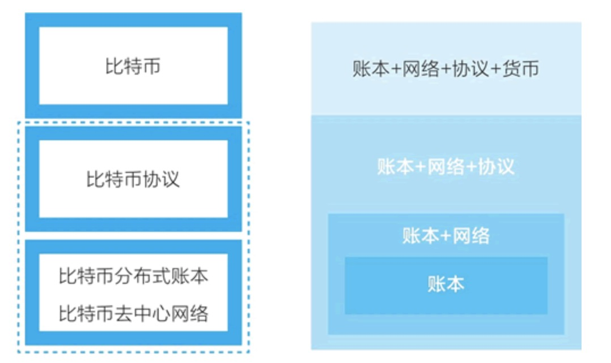

比特币：一个点对点电子现金系统。
比特币的诞生：2009.1.3，中本聪生成了第一个比特币区块。
比特币的特点：去中心化、去中介化。
比如说pay-pal、支付宝是中介化的，因为它需要中心数据库处理交易，也就是价值转移。而人民币、美元等是中心化的，因为它需要中央银行和印钞厂发行货币。
比特币是去中心化的，由比特币协议的发行机制决定；是去中介化的，由比特币协议的分配机制决定。
比特币的三大组成：加密数字货币、分布式账本、去中心化网络。
为什么创造比特币：在数字世界，需要一种具有现金特性的事物。


